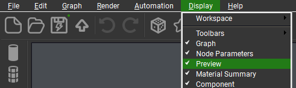
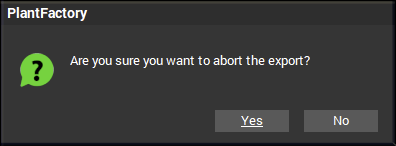
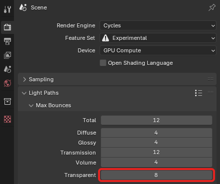

Frequently Asked Questions¶
Why is my Plant Gallery View so small when using the "Browse Via Blender" mode?¶
- Check that your
3D Viewis large enough, as the gallery size depends on it. If you have the view split (for example, with theShader Editor), it may cause the gallery to appear smaller.
What Normal Map format does PlantFactory use?¶
- PlantFactory uses the OpenGL normal map format, which is the same as the one used in Blender, so no conversion is required.
PlantFactory starts, but nothing happens, and no plant is imported into Blender¶

-
Check that the "Preview" window under "Display" in PlantFactory is enabled, as shown in the screenshot here:
I receive a "Are you sure you want to abort the export" popup during import¶

- This is usually caused by PlantFactory not having enough time to load the geometry of the plant before the export is attempted. Try adjusting the Geometry Load Buffer under preferences to resolve this issue. As an alternative workaround, in cases where this persists, hold down the "Escape" key for 2-3 seconds to make the popup disappear.
My plant appears too dark and some textures show black backgrounds¶
-
This issue is often caused by the
Transparency Bouncessetting in Blender being set too low. Increasing its value should help ensure proper light distribution and eliminate the dark areas.Example
- Navigate to the Render Properties tab.
- Scroll down to the Light Paths section.
- Locate the Transparency Bounces setting.
- Increase the value for Transparency Bounces.
- Re-render your scene to see if the issue is resolved.

What is the difference between a Backlight texture and a Translucency texture?¶
- There is no difference, both refer to the same type of texture used to simulate light passing through thin surfaces like leaves.
I want to create my own plants. What should I keep in mind?¶
-
To ensure materials are set up correctly when importing them with PF2B, name your materials properly inside PlantFactory. Specifically, include a keyword that indicates the type of material they represent. Recognized keywords include
leaf,bark,flower,fruit, and other relevant terms. This allows the addon to correctly identify and process materials during import.For more details, check the 'Automated Setup' section in PF2B: Under the Hood.
Tip
Check out the Community section for guides and resources on getting started with creating your own plants.
My plant Materials looks off. What can I do?¶
The translucency looks off¶
-
This might be caused by a low-quality translucency map that is not normalized and is either too bright or too dark, causing too much or too little translucency for the plant. If this is the case, you can:
- If you want to disable the translucency texture altogether, you can do this easily via the Post Processing panel by selecting the plant, editing the leaf material, and disabling it there.
- Manually go into the material and adjust the texture by, for example, adding a
Color Rampor aMap Rangenode between the texture and the shader and adjusting the brightness until the translucency looks correct.
If you believe the translucency texture setup is incorrect, please get in touch with me and provide the plant details, and I'll investigate further.
Tip
You can also disable the translucency texture import by unchecking the
Import Translucency Mapoption under the import settings to use a static translucency value instead.
The normals look off¶

-
Try clearing Custom Split Normals to see if this helps. This can be done easily by selecting the plant and navigating to
Properties Panel > Data > Geometry Data > Clear Custom Split Normals Data, as shown in the image:If the issue persists, please get in touch with me and provide the plant details, and I'll investigate further.
Other Textures Look off / Missing Textures / Wrong Textures¶
-
This might be caused by inconsistent texture names, as mentioned under PF2B: Under the Hood. Please try to troubleshoot the issue using the Troubleshoot Guide: Missing or Incorrect Textures first to pinpoint the problem.
If there are textures that are not connected or are incorrectly connected for a specific plant, please get in touch with me and provide the plant details, such as the name of the plant and the preset used, and I'll investigate further.
Plant Geometry looks incorrect. What can I do?¶
- Please get in touch with me and provide the plant details, and I'll investigate further.
PIL error in console¶
-
If you receive errors such as:
cannot import name '_imaging' from 'PIL' (C:\Users\USERNAME\AppData\Roaming\Blender Foundation\Blender\4.3\scripts\addons\PidgeonToolBag-main\python_modules\PIL\__init__.py)ImportError: cannot import name '_version' from partially initialized module 'PIL'
or similar error in the console when installing the addon:
This issue occurs due to conflicts between multiple addons that use the PILLOW Python library. Some addon combinations seem to cause import issues or circular dependencies with PIL. From my testing, this issue often disappears when you disable and then re-enable the affected addons. For example, in the above case where the "PidgeonToolBag" addon is clashing, try disabling and re-enabling both PF2B and PidgeonToolBag, which should hopefully resolve the issue.
I am looking into a permanent solution for this problem. If you encounter this error, please get in touch and let me know!
There are missing plants / empty thumbnails shown when browsing plants¶
- Please run both the
Re-Index PlantsandReload Thumbnailstools found in Preferences > Misc.
Why does my my plants show 'No Presets'?¶
-
This issue is likely caused by a missing or incomplete Preset cache.
- If this occurs with plants from the PlantCatalog & PlantFactory libraries, you can download and install the cache as described here.
- If this affects other plants, you can regenerate the cache using the tools available in Preferences > Plant Library.
Note: Not all plants in the 'PlantFactory library' have presets available.
{kind=link}
{kind=link}